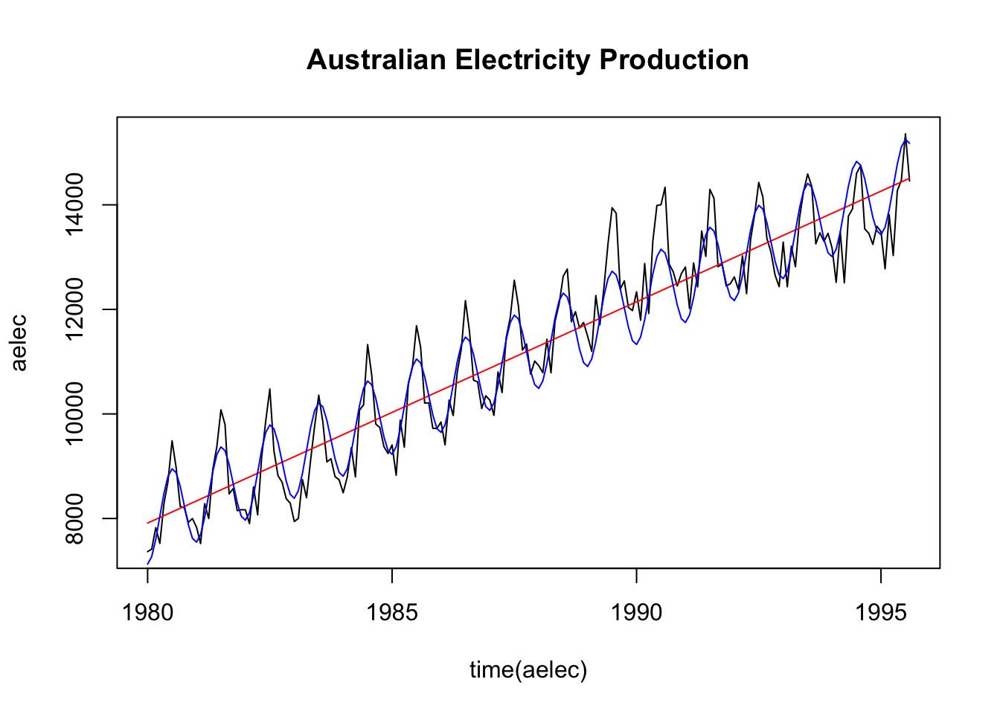

Set 2 Exploratory Analysis of Time Series Data
2.1 Time Series Data
A time series is an ordered sequence of observations, where the ordering is through time.
Time series data creates unique problems for statistical modeling and inference.
- Traditional inference assumes that observations (data) are independent and identically distributed. Adjacent data points in time series data are not necessarily independent (uncorrelated).
- Most time series models aim to exploit such dependence. For instance, yesterday’s demand of a product may tell us something about today’s demand of a product.
There are several different ways to represent time series data in R.
We will use the
tidyversefamily of packages extensively in this class. This package includes thelubridatepackage, which includes functions to work with date-times.Two of the most common ways to represent time series data are using data frames in which one of the variables is a time object (such as POSIXct or Date) or using a time series object.
2.2 Time Series EDA
The first thing to do in any data analysis is exploratory data analysis (EDA). Graphs enable many features of the data to be visualized, including patterns, unusual observations, changes over time, and relationships between variables. The features that are seen in plots of the data can then be incorporated into statistical models.
R has several systems for making graphs. We will primarily use ggplot2, which is among the set of tidyverse packages and is one of the most versatile systems for plotting. We will use a data set from Kayak to motivate our analysis.
conversions = read.csv("https://raw.githubusercontent.com/dbreynol/DS809/main/data/conversions.csv")
knitr::kable(head(conversions))| datestamp | country_code | marketing_channel | conversions |
|---|---|---|---|
| 2014-11-01 | be | Display Ads | 1174 |
| 2014-11-01 | be | KAYAK Deals Email | 57 |
| 2014-11-01 | be | Search Engine Ads | 1122 |
| 2014-11-01 | be | Search Engine Results | 976 |
| 2014-11-01 | fi | Display Ads | 12 |
| 2014-11-01 | fi | Search Engine Results | 2 |
This dataset contains information on the total number of daily conversions by country and marketing channel. Let us focus our analysis on the US and fist visualize the number of conversions by day.

This plot contains a lot of useful information. To gain insight into how conversions depend on marketing channel, we can use facets. Facets are subplots that display a time series for each marketing channel.

Display ads and search engine ads are the dominant marketing channels. Both have a regular pattern that is likely a function of the day of week, with a higher number of conversions during weekdays as compared with weekends. We can explore this feature by aggregating over each weekday and visualizing how the distribution of conversions changes by day.

Clearly, there are significant changes in the mean level of conversions across the week. This is a form of seasonality. It may be useful to see what the data look like when this weekday effect is removed. To do so, we could visualize the residuals from the following linear regression model:
\[\begin{align} \hat{\text{conversions}} = \hat{\beta}_0 + \sum_{j=2}^7 \bigg( \hat{\beta}_j \times 1(\text{weekday = j}) \bigg), \end{align}\]
where \(j\) indexes the day of week. The residuals from this model consist of each observation minus the mean for that particular weekday.

This allows us to more clearly see the trend across the date range, removing the effect of the weekly pattern.
2.3 Classical Regression
Given that regression is already in your tool kit, we will use it to model a time series. Let us assume that we have some output or dependent time series, say, \(x_t\) , for \(t = 1, \ldots,n\), that is being influenced by a collection of possible inputs, say, \(z_{t1}, z_{t2}, \ldots, z_{tq}\), where we regard the inputs as fixed and known.
We will look at monthly Australian electricity production (the fpp2::elec dataframe). The data is shown below.

Let us fit two models to this data, one where we use time as the independent variable. This estimates a linear trend. In the other, we will try to capture some of the obvious seasonality in the data.
\[\begin{align} y_t &= \beta_0 + \beta_1 t + w_t \\ y_t &= \beta_0 + \beta_1 t + \beta_2 \times ({2\pi \cos(t)}) + w_t \end{align}\]
The fits from these two models are shown below.

Clearly, model 2 offers a superior fit as compared with model 1. In fact, this model explains about 95% of the variation in electricity production. To check the validity of the model, let us examine the residuals across the range of time, \(t\).
One of the assumptions of the linear regression model is that the errors are independent and identically distributed. That is, for the model,
\[\begin{align} y = X \beta + \epsilon, \end{align}\]
The error vector, \(\epsilon \sim N(0, \sigma^2)\). This implies that there is no correlation structure to the residuals. One way to check that this is true is to check for the absence of correlation in the observed residuals.
2.4 Noise Processes
Thus far, we have explored time series data to better understand their properties. These exploration methods can also be used to generate forecasts for future values. However, they are not able to quantify the uncertainty inherent in those forecasts, nor do they model the dependency structure inherent in the time series data. We will begin with a very simple model that does both of these things.
2.4.1 White noise
Now let us define a new time series, \(z_t = y_t - y_{t-1}\).
Define the same properties as 1-5 above. These two simple models are important in finance. If a time series follows a random walk, then its first difference is white noise. Let’s see if this is the case with GOOG.
2.4.2 Random Walk
Let us consider a simple model to describe time series data,
\(y_t = y_{t-1}+e_t\),
where \(e_t \sim N(0, \sigma^2)\) and all elements of the error vector are mutually independent.
Let’s derive some important properties of this model:
- What is the mean, \(E(y_t)\)?
- What is the variance, \(Var(y_t)\)?
- What is the covariance between successive observations, \(\text{cov}(y_t, y_{t-1})\)?
- What is the correlation between successive observations, \(\text{cor}(y_t, y_{t-1})\)?
- Which properties depend on time?
2.5 Autocorrelation
compute autocorrelation of ar process
To review this concept, we’ll start with a definition for covariance. For two vectors of data, \(x\) and \(y\), the covariance between the two is,
\[\begin{align} \text{cov}(x,y) &= \frac{ \sum_i (x_i - \bar{x})(y_i - \bar{y})}{n-1} \end{align}\]
Correlation is a dimensionless measure of the linear association between two variables. It is defined as the covariance scaled by the standard deviations. That is,
\[\begin{align} \text{cor}(x,y) &= \frac{\text{cov}(x,y)}{\sigma_x \sigma_y} \\ &= \frac{ \sum_i (x_i - \bar{x})(y_i - \bar{y})}{ \sqrt{ \sum_i (x_i - \bar{x})^2 \sum_i (y_i - \bar{y})^2 }} \end{align}\]
Let’s compute this quantity on some simulated data.
set.seed(1)
n = 5
x = rnorm(n)
y = rnorm(n)
sum( (x - mean(x)) * (y - mean(y))) / ( (n-1) * sd(x) * sd(y) )
cor(x, y)For time series data, there is a closely related concept called autocorrelation. Given a time series, \(y_t\), where \(t=1,\ldots,T\), autocorrelation is the correlation between \(y_t\) and its lagged value, \(y_{t-k}\). That is, autocorrelation is the correlation of a time series with a delayed copy of itself, as a function of delay. Just as correlation is a function of covariance, autocorrelation is a function of autocovariance. The (sample) autocovariance, \(\hat{\gamma}\) for a time series \(y\) at lag \(k\) is:
\[\begin{align} \hat{\gamma}_k &= \text{cov}(y_t, y_{t-k}) \\ &= \frac{1}{T} \sum_{t = k + 1}^{T} (y_t - \bar{y})(y_{t-k} - \bar{y}) \end{align}\]
The (sample) autocorrelation function for lag \(k\), \(\hat{\rho}_k\), is simply the lag \(k\) autocovariance, \(\hat{\gamma_k}\) , scaled by the standard deviations.
\[\begin{align} \hat{\rho}_k &= \frac{ \hat{\gamma_k} }{\hat{\sigma}_{y_t} \hat{\sigma}_{y_{t-k}}} \\ &= \frac{ \hat{\gamma_k} }{\hat{\gamma_0}}. \end{align}\]
The second line follows from the linear regression assumption of constant variance. Here is a simple example of computing the lag 1 autocorrelation.
2.6 Stationarity
Stationarity is a convenient assumption that allows us to describe the statistical properties of a time series. A time series is said to be stationary if there is:
- Constant mean. \(E(X_t) = \mu\).
- Constant variance. \(Var(X_t) = \sigma^2\).
- Constant Autocorrelation. \(Cor(X_t, X_{t-h}) = \rho_h\).
compute mean/ variance under stationarity
2.7 Multiple Time Series
Often we will want to develop insight into the relationship between several variables. To illustrate, we will use quarterly data on GDP per capita and the Case Shiller Home Price Index (both from the FRED database).
fred = read.csv("https://raw.githubusercontent.com/dbreynol/DS809/main/data/fred_dat.csv")[,-1]
fred$date = ymd(fred$date)
It looks like these two time series track pretty closely to one another. We could fit a linear regression to this data in order to estimate the expected change in the Case Shiller Index for a unit ($1) change in GDP/ capital
| term | estimate | std.error | statistic | p.value |
|---|---|---|---|---|
| (Intercept) | -556.2290146 | 33.8244315 | -16.44459 | 0 |
| gdp | 0.0126208 | 0.0005663 | 22.28669 | 0 |
Further, we could also examine the residuals to gain insight into what is missing from this model.

The model severely underestimates the house index starting during the pandemic. There is a clear pattern to these residuals. Is this a problem?
2.8 Lab 1
cross correlation/ decomposition/
- We can further hone in on the underlying trend of the residuals at the end of Time Series EDA by computing and plotting a moving average. For a time series \(y_t\), \(t = 1, \ldots, T\), a moving average of order \(m\) can be written, \[\begin{align} \hat{y_t} = \frac{1}{m} \sum_{j=-k}^{k} y_{t+j}, \end{align}\] where \(m=2k+1\). The concept behind this technique is that observations that are close in time are likely to be close in value. Compute a moving average of order \(m=7\) for the residual time series and plot it along with the residuals in a single plot.
n = length(mod_df$resids)
ma_resids = array(NA, dim = n) # initialize residuals vector
for(i in 4:(n-3)) {
ma_resids[i] = mean(mod_df$resids[(i-3):(i+3)])
}
data.frame(date = mod_df$datestamp, resids = mod_df$resids, ma = ma_resids) %>%
drop_na() %>%
pivot_longer(-date) %>%
ggplot(aes(date, value)) + geom_line(aes(color = name)) +
theme_minimal() +
ggtitle("Plot of Residuals and their order 7 moving average")
- Join the Kayak visits data (see below) to the conversions data from Time Series EDA. Use the
inner_joinfunction with the argument,by = c(“datestamp”, “country_code”, “marketing_channel”)and then filter to only US observations. Make a plot ofuser_visitsandconversionsby day. Standardize them if it makes sense. Then, fit a linear regression model withconversionsas the response variable anduser_visitsas the explanatory variable. What is the estimated line equation? Finally, make a plot of the residuals from this model.
visits = read.csv("https://raw.githubusercontent.com/dbreynol/DS809/main/data/visits.csv")
visits$datestamp = ymd(visits$datestamp)
df = inner_join(visits, conversions, by = c("datestamp", "country_code", "marketing_channel")) %>%
filter(country_code == "us") %>%
drop_na() %>%
group_by(datestamp) %>%
summarise(visits = sum(user_visits), conv = sum(conversions))
conv_lm = lm(conv ~ visits, data = df) # conversions = 2752.13 + .31 * visits
df %>% mutate(std_visits = (visits - mean(visits))/sd(visits), std_conv = (conv - mean(conv))/sd(conv)) %>%
select(datestamp, std_visits, std_conv) %>%
pivot_longer(-datestamp) %>%
ggplot(aes(datestamp, value)) +
geom_line(aes(color = name)) +
theme_minimal() +
ggtitle("Standardized Visits and Conversions")
- Wrtie a function in R that takes two arguments: a time series (\(y\)) formatted as a vector and an integer (\(k\)) specifying a lag. The output for this function is the lag \(k\) autocorrelation for \(y\), using the formula in Autocorrelation. Compare the output of your function to the output from
(acf(y)). An extra challenge is to allow \(k\) to be a vector of lags, in which case your function should return a vector of autocorrelation values.
y = arima.sim(n = 1e5, model = list(ar = c(.1,.2)))
acf_fun = function(y, k) {
return(cor( window(y, end = length(y)-k ), window(y,start = k+1)))
}
acf_fun(y,2)## [1] 0.2144521## [1] 0.2144471- The partial autocorrelation function, \(\phi_k\), measures the correlation between a time series \(y_t\) and a lagged copy \(y_{t-k}\), with the linear dependence of \(\{ y_{t-1}, y_{t-2}, \ldots,y_{t-k-1} \}\) removed. When \(k=1\), \(\hat{\phi}_k = \hat{\rho}_k\). When \(k>1\),
\[\begin{align}
\hat{\phi}_k = \text{cor}(y_1 - \hat{y_1}|\{ y_2, \ldots, y_{k-1} \} , y_k - \hat{y_k}|\{ y_2, \ldots, y_{k-1} \} ),
\end{align}\]
where \(\hat{y_1}|\{ y_2, \ldots, y_{k-1} \}\) is the predicted \(y_1\) using the linear regression where \(\{ y_2, \ldots, y_{k-1} \}\) are explanatory variables.
Compute the lag 1 and 2 partial autocorrelations for the following simulated time series. Show your code and validate your answers using the
pacffunction. Thewindowfunction may be useful to extract subsets of the time series vector.
##
## Partial autocorrelations of series 'ysim', by lag
##
## 1 2 3 4 5 6 7 8 9 10 11
## 0.444 -0.030 -0.027 -0.026 0.011 -0.048 0.068 0.004 0.043 0.003 -0.008
## 12 13 14 15 16 17 18 19 20 21 22
## -0.033 0.036 0.009 0.057 -0.067 -0.030 -0.062 0.051 -0.028 -0.019 -0.043
## 23 24 25 26 27 28 29 30
## 0.018 -0.041 0.014 -0.014 -0.003 0.024 -0.014 0.031# lag 1 - same as the lag 1 acf
y1 = as.numeric( window(ysim,1,999))
y2 = as.numeric( window(ysim,2,1000) )
lag1 = (sum( (y1-mean(ysim)) * ( y2 - mean(ysim) )) )/ sum( (ysim - mean(ysim))^2)
# lag 2
y1 = as.numeric( window(ysim, 1, 998))
y2 = as.numeric( window(ysim, 2, 999))
y3 = as.numeric( window(ysim, 3, 1000))
y1t = residuals( lm(y1 ~ y2))
y3t = residuals( lm(y3 ~ y2))
cor(y1t, y3t) # manual lag 2 pacf## [1] -0.03019979## [1] -0.03049528